Single sign-on for the setup page #
On this page
Team admins can sign in to a shared proxy's setup page with their company account (Google, Microsoft Entra ID, Okta, any OpenID Connect provider, or GitHub) instead of sharing one password, and developers can sign in to get their own access tokens. Off unless you turn it on. A proxy for one person on one machine does not need it: give the page a password instead (Security & access > Protect this page). Where single sign-on fits among the other setups: Which setup do I need?.
Contents
- In plain words
- Set it up with the wizard
- How it works
- Developer sign-in
- Recent sign-ins
- The settings
- Microsoft Entra ID
- Okta
- GitHub
- Other OpenID Connect providers
- On Kubernetes
- People see their own usage
- What is not verified
In plain words #
- What it is. Your company's sign-in page (the one you use for email) guards the proxy's setup page. Admins open
an address like
https://maple-admin.example.com, sign in with their work account, and see the dashboards and manage people and budgets. Nobody shares a password. - Developers too, if you want. With developer sign-in on, a developer signs in at the same address and lands on My access, a page of their own: they make their own tokens there, see their usage, and connect their own Maple proxy: the proxy signs in, the developer types the code it shows on My access, and the page names the proxy before they confirm. They never see the admin pages. See How developers sign in.
- How you set it up. On the setup page on the proxy's own machine, open Set up more > Single sign-on for admins. A wizard asks for your identity provider, the address people will open, the client id and secret, and who is an admin, checks everything, and saves it. Restart the proxy once.
- What you need first. An address people reach over HTTPS (a load balancer, an ingress or a reverse proxy in front of the proxy), and an application registered with your identity provider. The wizard tells you what to paste where.
Set it up with the wizard #
The Single sign-on tab on the setup page on the proxy's own machine. The wizard is not available through
single sign-on itself: who may sign in is only ever changed on the proxy's machine (or in config.yaml).
Identity provider. Google, Microsoft Entra ID (your tenant id), Okta (your org or authorization server), GitHub, GitHub Enterprise Server, or another OpenID Connect provider (its issuer).
The address people open. Type the host name. The wizard shows the redirect address to give your identity provider, and where its console takes it:
Where this page listens for single sign-on. A reverse proxy on this machine or in this pod (the default,
127.0.0.1:11547), the proxy serving TLS itself (certificate and key files, checked to load and to name your host), or a private network to your load balancer (plain HTTP, only on a network that is yours alone). It must differ from the proxy's other addresses, and the wizard checks the port is free.Client id and secret. The secret goes into the proxy's secret store, never into
config.yaml, and is never shown again (with mounted secrets, put it in the mounted secret undersso.client_secret). If the page has a password, it is asked again.Who is an admin. Emails, domains, groups or subjects, with hints for your provider (see the recipes below).
Developers (optional). Developer sign-in: off, ask an admin, or automatic; who may (domains, groups); groups to teams; how long their tokens last; the addresses their tools use. See Developer sign-in.
Check. Check the provider fetches its discovery document and keys from the proxy and shows a summary; Check everything runs every check a save makes. Nothing is saved.
Save, or show the YAML. Save writes
setup_page.ssointoconfig.yamland keeps the rest of the file as it is (the page's password is asked again when one is set). Show the YAML gives you the block to paste yourself, for a ConfigMap or a settings repository.
What the steps look like:
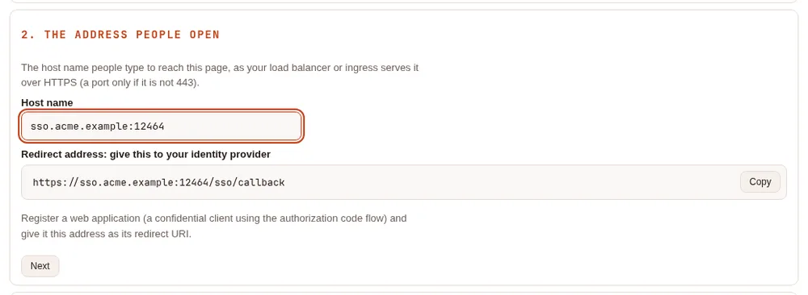
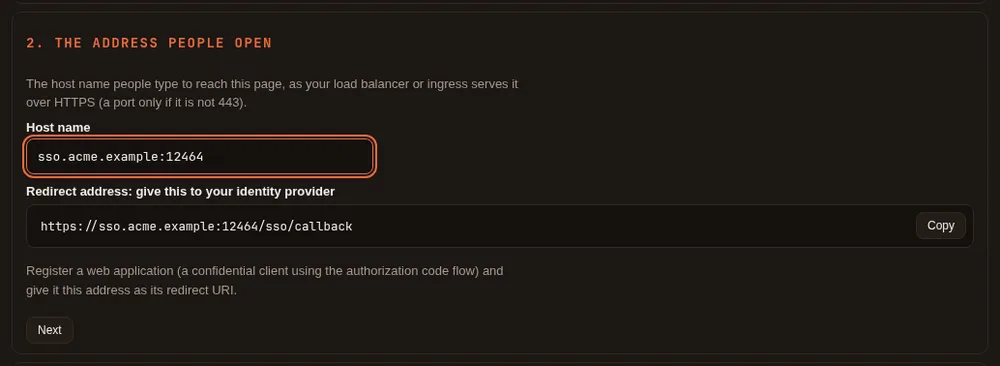
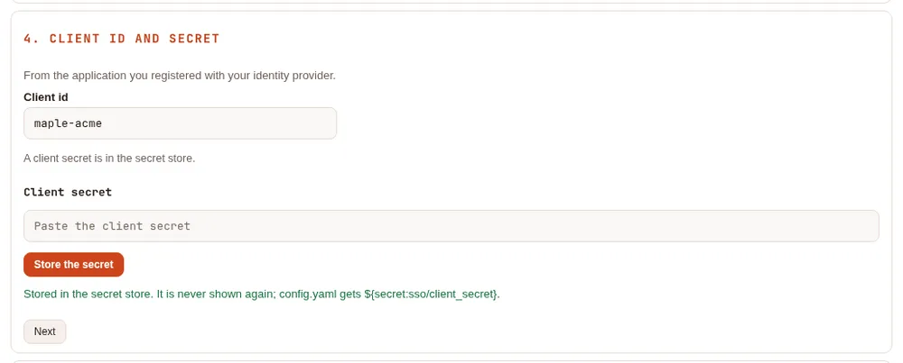
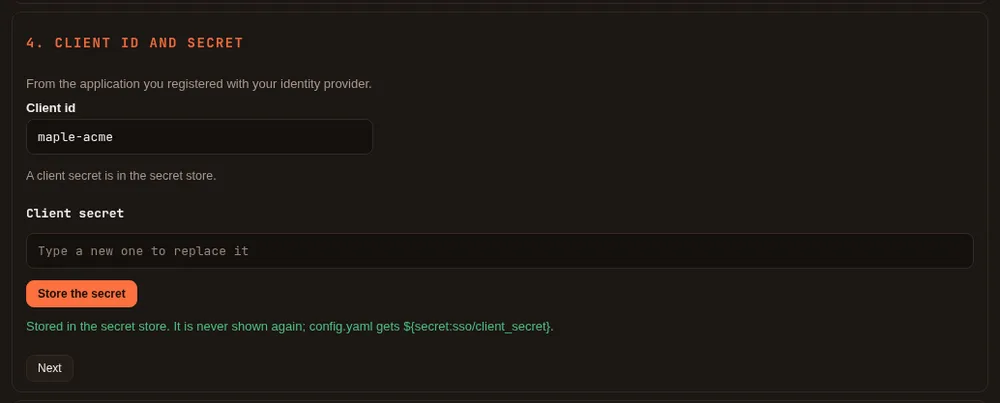
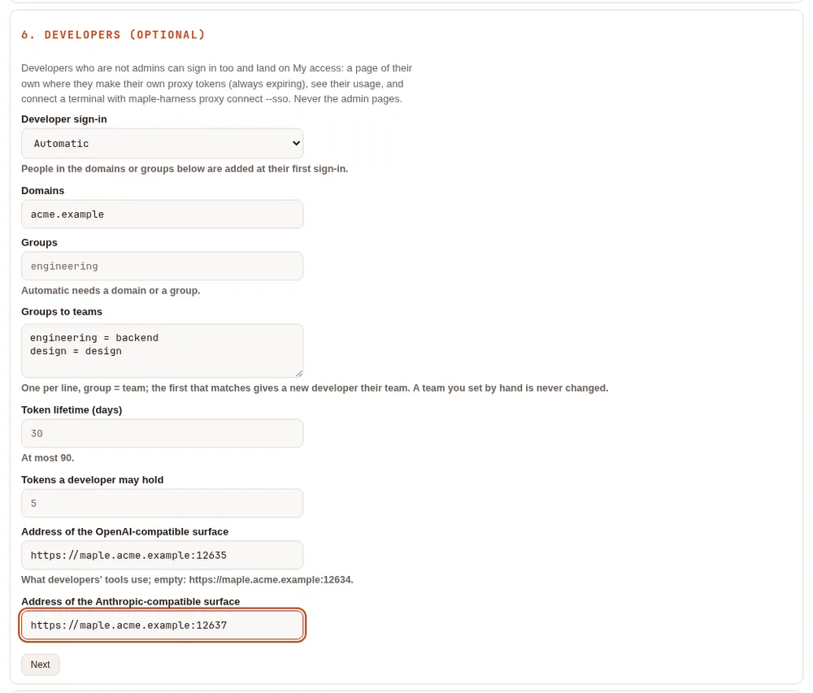
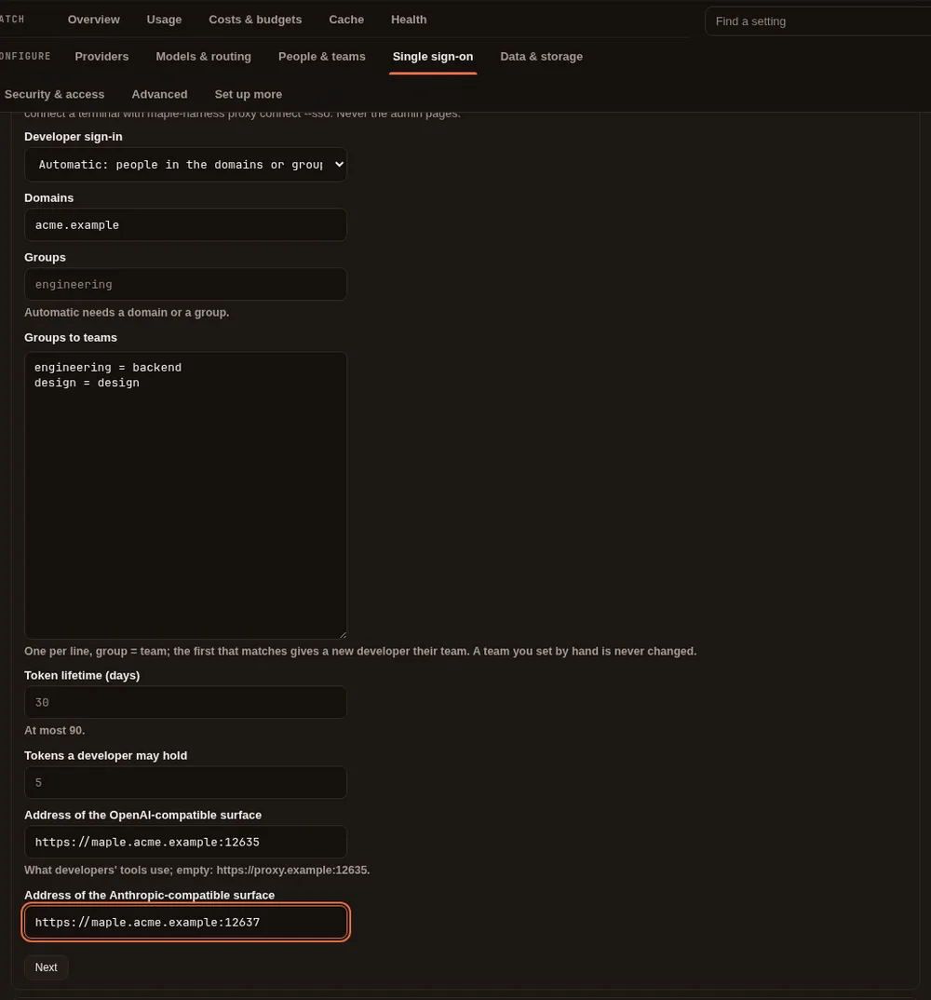
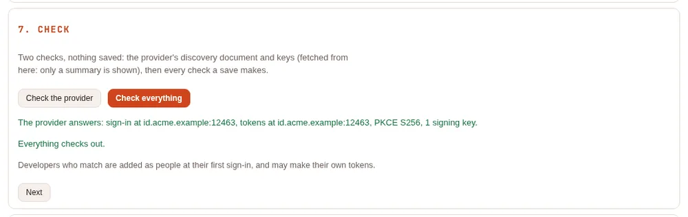
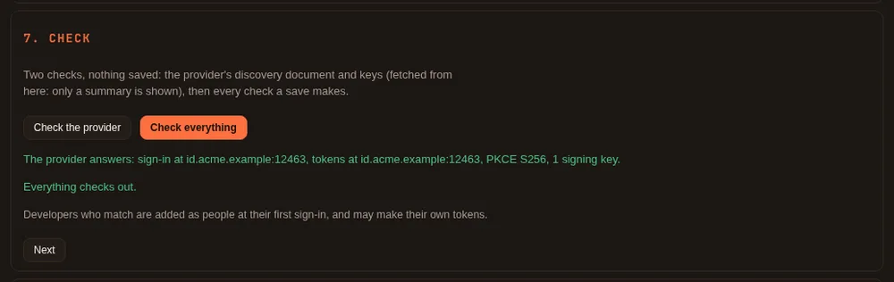
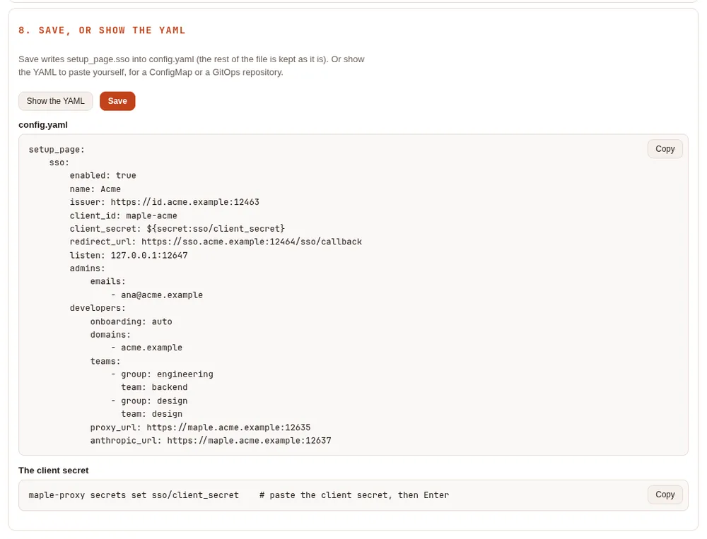
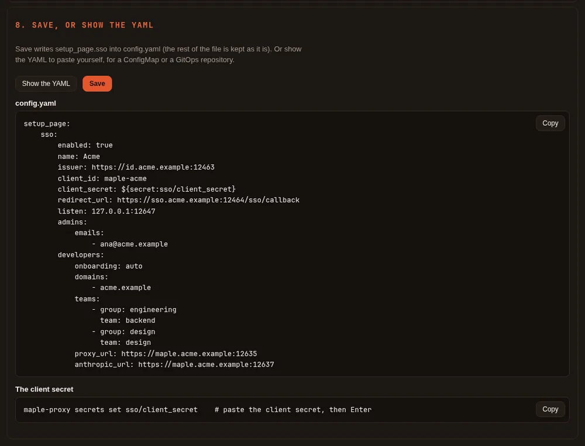
Then restart the proxy (maple-proxy restart, or restart its service): the banner says so until you do. The address,
provider and client apply at the restart; admin and developer rules apply at the next request, without one. Open the
address in a private window and sign in. Afterwards the tab shows the settings, Change to reopen the wizard, and
Recent sign-ins.
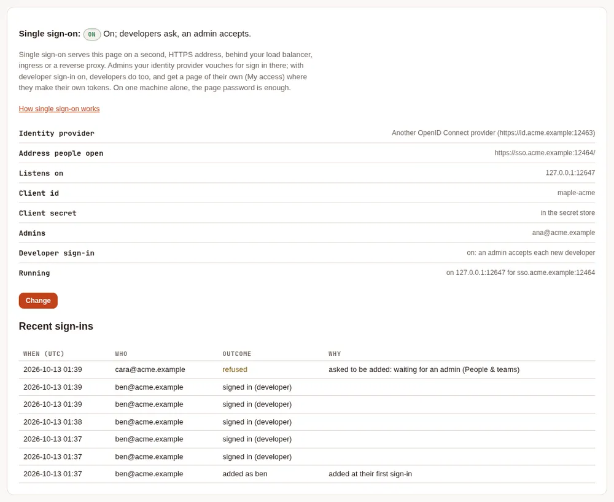
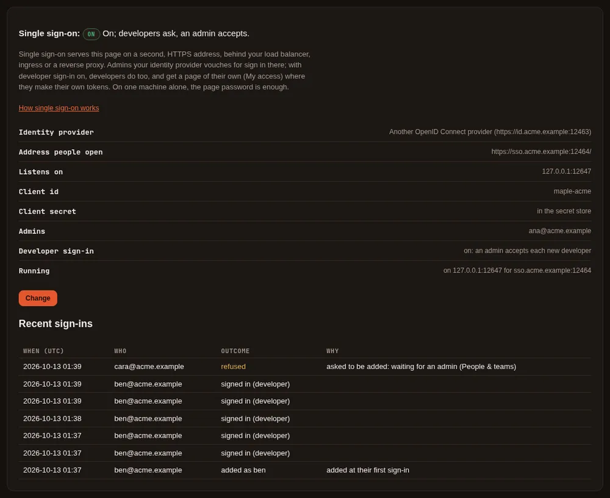
You can still write the block by hand, as in 2.1: see The settings. The proxy refuses to start with single sign-on half set up and says what is missing.
How it works #
- The setup page on the proxy's machine does not change. It still listens on this machine only, and its password (if you set one) still works there. Maple's own commands keep using it.
- Single sign-on serves the page on a second address you choose (
setup_page.sso.listen), which people reach through your load balancer or ingress at the address inredirect_url, over HTTPS. That address answers only to the host name inredirect_url. - That address is never open. Every visitor signs in first. It does not take access tokens, and by default it
does not take the page's password either (
password: allowedchanges that). - An admin sees the dashboards, usage, health and settings, and manages people, teams, their budgets and models,
and access tokens with the
proxyormetricsscope (through single sign-on a token an admin makes always expires: 90 days unless they choose). Changing providers, keys, settings, single sign-on itself, remote control, webhooks, the page's password or the MCP hub, other kinds of tokens, sign-ins in progress, the secret store and the activity log stay on the setup page on the proxy's machine, or inconfig.yaml. - An admin reads the proxy's configuration without anything about its machine: no listen addresses, host names, trusted proxies, file paths or program commands. Never keys or secrets.
- A sign-in lasts
session_lifetime(one hour by default, at most twelve), counted from when it started. Taking someone out ofadmins(or turning single sign-on off) takes effect on their next click. Taking them out of a group at your identity provider takes effect when their sign-in ends. Sign out ends that browser's sign-in and closes its live view at once; Sign out other browsers ends every other single sign-on browser. - Open the page by typing or bookmarking its address. Like the setup page on your machine, it refuses requests that come from another site, including a plain link on an intranet page.
Who counts as an admin, in admins (any one is enough):
| Key | Matches |
|---|---|
emails | A verified email address, exactly (case does not matter) |
domains | A verified email address in that exact domain (no subdomains, no wildcards). Not for GitHub |
groups | A value of the ID token's groups claim (groups_claim, default groups); GitHub: an organisation (my-org) or a team (my-org/my-team) |
subjects | The account's unique id at the provider (the ID token's sub; GitHub: the numeric user id) |
Developer sign-in #
Off by default (developers.onboarding: off). Turn it on in the wizard's step 6, or in config.yaml:
- Ask an admin (
approve): a developer's first sign-in files a request; an admin accepts it on People & teams (as a new person, or as someone already there) or refuses it. - Automatic (
auto): someone whose verified email is in one ofdevelopers.domains, or who is in one ofdevelopers.groups, is added as a person at their first sign-in (at most 50 a day; more wait for an admin). Their team comes fromdevelopers.teams(the first group that matches); a team you set by hand is never changed.
A person is matched by their account at the identity provider, recorded at their first sign-in, never by their email alone: an address that names someone who signs in with another account is refused and shown to admins. Removing a person forgets the accounts they signed in with.
With developer sign-in on, the sign-in page (before anyone signs in) shows the proxy's name (server.proxy_name,
or "this proxy" without one) and says that admins and developers both sign in there. Pick a name you are happy for
anyone who can open that address to see.
What a developer can do, the token lifetimes, and signing their own proxy in: How developers sign in.
Developer sign-in is also what lets a developer's own proxy sign in to this proxy as a hub, with their company account
(Join your laptop to a team hub): each such sign-in is approved on My
access, where the page names the proxy that asked, and the token it gets counts toward developers.max_tokens.
Recent sign-ins #
The Single sign-on tab lists the sign-ins of the last seven days from the proxy's audit log: who signed in (and as an admin or a developer), who was added, and who was refused and why: not an admin or a developer here, no verified email address, a Google account outside your Workspace domain, not in an approved GitHub organisation, waiting for an admin, or an email that belongs to someone who signs in with another account. Never a code or a token. People & teams shows the refused developer sign-ins too.
The settings #
All under setup_page.sso in config.yaml. The wizard writes them for you. Read at start, except admins,
groups_claim, password, session_lifetime, self_view, people and developers, which apply on the next
request after the file is saved.
| Key | Default | What it does |
|---|---|---|
enabled | false | Turns single sign-on on |
provider | oidc | oidc (Google, Microsoft, Okta and any OpenID Connect provider) or github |
name | the provider's | The name on the sign-in button |
issuer | The provider's issuer, https:// (OIDC only) | |
github_url | https://github.com | GitHub Enterprise Server's address (GitHub only) |
client_id | The client (application) id | |
client_secret | A ${secret:NAME} reference; never the secret itself | |
redirect_url | https://<host>/sso/callback, exactly as registered with the provider | |
listen | The address the page is served on for single sign-on (host:port); not one of the proxy's other addresses | |
tls_cert_file, tls_key_file | Serve listen with TLS | |
insecure_ | false | Allow listen off this machine without TLS (logged at start) |
scopes | Scopes asked for besides openid email profile (for example groups) | |
admins | Who may sign in as an admin: see the table above. At least one entry | |
groups_claim | groups | The ID token claim the groups are read from (for example roles) |
password | off | allowed also accepts the page's password (when one is set) on this address |
session_ | 1h | How long a sign-in lasts, 5m to 12h |
self_view | off | on lets people see their own usage: see below |
people | Email to person id, for the self view (and, with developer sign-in, the person an address is: automatic binds it once, ask-an-admin fills in the request) | |
developers. | off | off, approve (ask an admin) or auto (automatic, needs domains or groups) |
developers., developers. | Who may sign in as a developer (domains not for GitHub). With neither, in approve, anyone your provider vouches for may ask | |
developers. | Groups to teams, in order: - group: engineering / team: backend | |
developers. | 30 | How long a token a developer makes lasts, 1 to 90 days |
developers. | 5 | How many live tokens a developer may hold, 1 to 20 |
developers., developers. | from allowed_hosts | The addresses developers' tools use, shown in their connect lines |
Google #
- In the Google Cloud console, APIs & Services > Credentials > Create credentials > OAuth client ID, type Web application. Add your redirect address under Authorized redirect URIs.
- In the wizard choose Google (
issuer: https://accounts.google.com), and the client id and secret it shows. - Admins:
emailsordomains. For a domain, the account must be a Google Workspace account of that domain (itshdclaim), not just any Google account with an address there; the same holds for an email in your company's domain. Google's ID tokens carry no groups.
Microsoft Entra ID #
- App registrations > New registration: supported account types this organizational directory only, redirect URI of type Web = your redirect address. Then Certificates & secrets > New client secret.
- In the wizard choose Microsoft Entra ID and type your directory (tenant) id: the issuer is
https://login.microsoftonline.com/<tenant-id>/v2.0. Thecommonandorganizationsissuers are refused: one tenant per proxy. - Admins by group (recommended): Token configuration > Add groups claim, security groups, ID token. The claim
holds group object ids: put those in the admins' groups. With app roles instead, set
groups_claim: rolesand list the role values. - Admins by email: Token configuration > Add optional claim, ID token,
emailandxms_edov. Entra sends noemail_verified, so an email counts only whenxms_edovsays its domain's owner verified it. A user in more than 200 groups gets no groups claim at all: use app roles for them.
Okta #
- Applications > Create App Integration > OIDC - OpenID Connect > Web Application. Sign-in redirect URI = your redirect address.
- In the wizard choose Okta: the issuer is
https://<your-org>.okta.com(the org authorization server) orhttps://<your-org>.okta.com/oauth2/default(a custom one). - Admins by group: on the org server, the app's Sign On > OpenID Connect ID Token > Groups claim filter; on a
custom server, a
groupsclaim in the ID token under Security > API > Authorization Servers > Claims, and tick Ask for the groups scope in the wizard if you tied the claim to that scope. Then list the group names.
GitHub #
GitHub has no OpenID Connect sign-in for people, so Maple uses a GitHub OAuth app with PKCE and then asks GitHub for the account's verified email addresses and, when groups are used, its organisations and teams.
- Settings > Developer settings > OAuth Apps > New OAuth App; Authorization callback URL = your redirect address.
- In the wizard choose GitHub (
provider: github, no issuer), the client id and a client secret. - Admins: groups as
my-orgormy-org/my-team(recommended; an organisation that restricts OAuth apps must approve this one, or its teams are not visible), or subjects (numeric user ids). Emails work with verified addresses, but an address stays verified on GitHub after its owner leaves your company, so prefer groups; domains are refused for GitHub, for admins and developers alike. - GitHub Enterprise Server: choose it in the wizard and type its address (
github_url).
Other OpenID Connect providers #
Keycloak, Auth0, Authentik, Dex and others work the same way: register a confidential web client, type the issuer
whose /.well-known/openid-configuration names that same issuer, and use emails, domains, groups or subjects. The
provider must support the authorization code flow with PKCE (S256). Only an email_verified: true address counts as
verified. Check the provider in the wizard reaches a provider on a private network too, over HTTPS.
On Kubernetes #
When config.yaml comes from a ConfigMap (storage.settings: file) or a settings repository, the wizard cannot
save: use Show the YAML and put the block there, and the client secret in your Secret under sso.client_secret.
For example:
# config.yaml (ConfigMap)
setup_page:
sso:
enabled: true
issuer: https://login.microsoftonline.com/<tenant-id>/v2.0
client_id: <application id>
client_secret: ${secret:sso/client_secret} # the Secret's key sso.client_secret
redirect_url: https://maple-admin.example.com/sso/callback
listen: 0.0.0.0:11547
tls_cert_file: /run/tls/tls.crt # or insecure_backend: true inside a network you trust
tls_key_file: /run/tls/tls.key
admins:
groups: [<group object id>]Expose port 11547 with a Service, and an Ingress (or a Gateway route) for maple-admin.example.com with TLS that
sends that host to it (with tls_cert_file set, tell your ingress the backend speaks HTTPS). Keep the Host header
as the browser sent it. To have the throttles and the audit log count each browser rather than the ingress, list
the ingress in server.trusted_proxies. With several replicas (storage.mode: central), sign-ins and sessions are
kept in Redis, sealed with storage.encryption_key, so any replica serves any admin, and a sign-out ends their
live views on every replica. With settings from a ConfigMap, developers cannot be added or make tokens by
themselves (My access says so): an admin gives them a token. See Run the proxy on Kubernetes.
People see their own usage #
With self_view: on, someone who is not an admin but whose verified email is one of your people's sees that
person's own usage (the last 30 days, by day and by model) at /sso/me, and nothing else. Map emails to person
ids under people (ana@example.com: ana), or give a person their email as their id. Off by default; the
token-based self view (people_self_view) is unchanged. A developer with developer sign-in sees their usage on My
access instead. See Teams.
What is not verified #
Tested against a stand-in OpenID Connect provider and a stand-in GitHub, and in Chromium through a TLS front like a load balancer. Not yet run against real Google, Microsoft Entra ID, Okta or GitHub accounts, real ingress controllers, or Firefox and Safari.